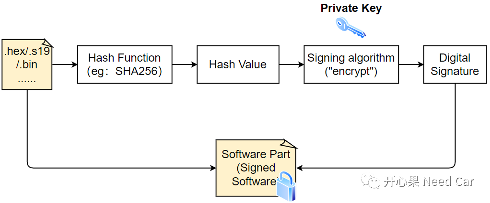
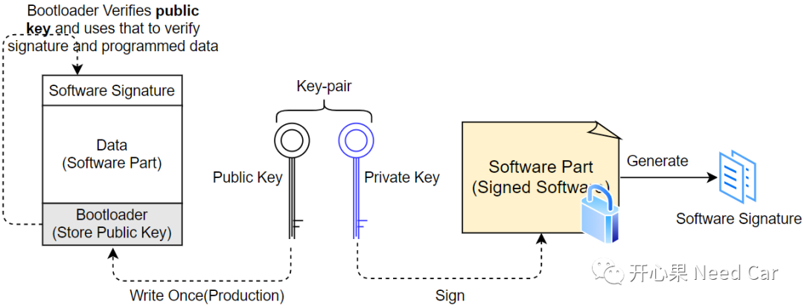

签名与加密应使用各自定义的方案。不要把“私钥加密、公钥解密”当作所有数字签名的通用算法说明；RSA-PSS和RSA-OAEP分别属于签名与加密方案。
RFC 8017，第7、8节开心果 Need Car · 2022-11-22T09:33:00+08:00 · 微信原文

1、SHA256
2、RSA2048
加密算法，除了常用的RSA2048，还有RSA4096等。
软件认证中，公钥（Public Key）和私钥（Private Key)是成对出现的，即：Key-Pair，两者之间的关系和作用如下所示：

工程中，Public Key和Private Key一般固定长度，比如：2048 Bit（256 Byte）。
Private Key：对Software Part进行签名（加密）。
Public Key：对前面的Software Part进行解密。
既然用Public Key对Software Part进行解密，就需要提前将Public Key存储到ECU中。开发过程中，使用开发对应的Public Key（默认Key，eg：0xFFFFFFFFFF）；当软件完成开发以后，会将Public Key存储到一个不可修改的位置，且只能写一次，写入位置可以是HSM，这个Public Key称为产品Public Key。
工程中，Public Key一般在升级过程中，提前通过Write Data By Identifier service(0x2E)写入指定位置。
1、Private Key对谁加密（签名）？
2、Public Key对谁解密？
往期精彩回顾